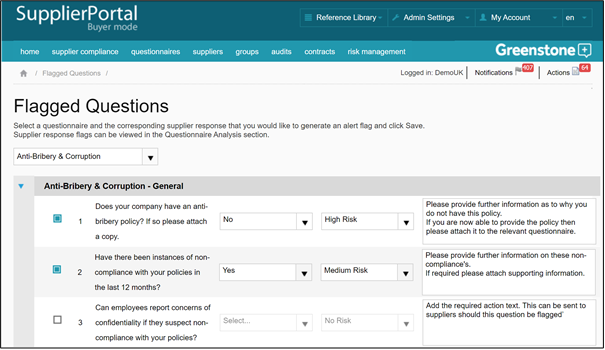

Flags enable you to be alerted to certain question responses; often used to identify potential risks.
Select the questionnaire you would like to view, select the question(s) you would like to place a flag on, and then select the response option(s) that will trigger that flag.
You will have the option to assign the following flags – No risk / Low risk / Medium risk / High risk.
If you select a risk flag, this will result in any suppliers triggering a risk flag being placed in the Risk Management area. If you select a risk flag, then you should also populate the free text field provided for the flag. This is standardised text which will be used to populate the ‘Action required’ field when creating supplier actions within risk management i.e. pre-defined corrective action text.
‘No risk’ flags will only be displayed outside of risk management.
Once set, flags will be visible on the questionnaire analysis dashboard, in individual questionnaire analysis screens, and in an individual supplier’s profile. Each user can also choose to be alerted to flags through internal messages and/or emails (see Admin Settings > User Management).
